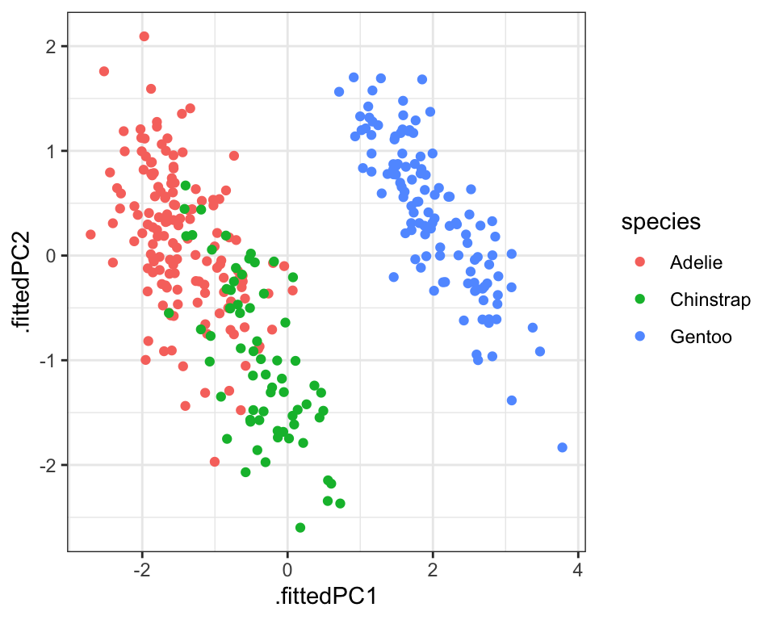

Chapter 10 Principal component analysis (PCA)
library(tidyverse)
library(broom)10.1 Indledning og læringsmålene
10.1.1 Læringsmålene
Du skal være i stand til at
Forstå koncepten bag principal component analysis (PCA) Benytte PCA i R og lave et plot af et datasæt i to dimensioner Vurdere den relative varians forklarede af de forskellige components Anvende PCA til at vurdere variablernes bidrag til de principal components
10.1.2 Introduktion til kapitlet
Principal component analysis er en meget populær og ofte benyttet statistisk metode, der blandt andet kan anvendes til at visualisere data med et højt antal dimensioner i et enkelt scatterplot med to dimensioner. Det er meget nyttigt til at se den underliggende struktur i datasættet, og indenfor biologi er det meget brugt til blandt andet at visualisere, hvor de forskellige prøver eller replikater befinder sig i forhold til hinanden - for eksempel for at se, om kontrolprøverne og behandlingsprøverne fremtræder på samme steder i plottet (som indikerer, at de ligner hinanden).
10.1.3 Videoressourcer
- Video 1 - hvad er PCA?
Link her hvis det ikke virker nedenunder: https://player.vimeo.com/video/556581604
- Video 2 - hvordan man lave PCA i R og få output i tidy form
Link her hvis det ikke virker nedenunder: https://player.vimeo.com/video/556581588
- Video 3 - hvordan man visualisere de data (principal components, rotation matrix)
Link her hvis det ikke virker nedenunder: https://player.vimeo.com/video/556787141
10.2 Hvad er principal component analysis (PCA)?
I sidste lektion arbejdede vi med penguins, hvor vi så, at der faktisk var fire numeriske variabler - altså fire dimensioner - som blev brugt til at lave k-means clustering.
library(palmerpenguins)
penguins <- penguins %>%
drop_na() %>%
mutate(year=as.factor(year))
penguins %>% select(where(is.numeric)) %>% head()## # A tibble: 6 × 4
## bill_length_mm bill_depth_mm flipper_length_mm body_mass_g
## <dbl> <dbl> <int> <int>
## 1 39.1 18.7 181 3750
## 2 39.5 17.4 186 3800
## 3 40.3 18 195 3250
## 4 36.7 19.3 193 3450
## 5 39.3 20.6 190 3650
## 6 38.9 17.8 181 3625Når man laver et plot for at vise de forskellige clusters, får man et problem - hvilke to variabler skal plottes? Man kan plotte hver eneste par af variabler. For eksempel kan man prøve en pakke, der hedder GGally, som automatisk kan plotte de forskellige par af numeriske variabler og beregner korrelationen mellem variablerne.
require(GGally)## Indlæser krævet pakke: GGally## Registered S3 method overwritten by 'GGally':
## method from
## +.gg ggplot2penguins %>%
ggscatmat(columns = 3:6 ,color = "species", corMethod = "pearson") +
scale_color_brewer(palette = "Set2") +
theme_bw()## Warning: The dot-dot notation (`..scaled..`) was deprecated in ggplot2 3.4.0.
## ℹ Please use `after_stat(scaled)` instead.
## ℹ The deprecated feature was likely used in the GGally package.
## Please report the issue at <https://github.com/ggobi/ggally/issues>.
## This warning is displayed once every 8 hours.
## Call `lifecycle::last_lifecycle_warnings()` to see where this warning was
## generated.Problemet er, at så snart antallet af dimensioner i datasættet bliver større end 4, bliver plottet alt for komplekst og pladskrævende.
En løsning til problemet er at projicere datasættet ned til et mindre antal dimensioner (f.eks. kun 2 dimensioner). Disse dimensioner fanger oplysninger fra alle variablerne i datasættet, og derfor, når man laver et scatter plot, får man repræsenteret det hele datasæt i stedet for kun to udvalgte variabler. Metoden for at lave disse såkaldte ‘projektioner’ kaldes ‘principal component analysis’.
10.2.1 Simpelt eksempel med to dimensioner
Man kan forsøge at forstå, hvordan PCA fungerer, ved at kigge på et simpelt eksempel med 2 dimensioner:
#simulerer data med en høj korrelation
a <- rnorm(250,1,2)
b <- a + rnorm(250,0,.5)
df <- tibble(a,b)
ggplot(df,aes(a,b)) +
geom_point() +
theme_minimal()Vi kan se her, at der er en meget stor korrelation mellem a og b. Selvom datasættet er plottet i 2 dimensioner, kan det næsten forklares af én linje - en såkaldt bedste rette linje, der passer bedst gennem punkterne.
df <- tibble(a,b)
ggplot(df,aes(a,b)) +
geom_point() +
theme_minimal() +
geom_smooth(method="lm",se=FALSE)## `geom_smooth()` using formula = 'y ~ x'
Med andre ord kan vi næsten forklare datasættet i blot én dimension - punkternes afstand langs linjen. Når man tager alle punkterne og beskriver dem langs én linje, der bedst beskriver variansen i datasættet, kaldes denne linje for den første principal component (PC1). Man kan dernæst beskrive en anden linje, der er vinkelret på PC1, og som bedst forklarer variancen i de data, der ikke blev fanget af PC1 - dette kaldes for den anden principal component (PC2).
Vi kan se her PC1 og PC2 plottet:

Når vi tager PC1 og PC2 og plotter dem som henholdsvis x-aksen og y-aksen, svarer det til en drejning af akserne i plottet (vi finder PC1 og PC2 fra funktionen prcomp, som jeg forklarer i næste sektion):
dat <- augment(prcomp(df),df)
ggplot(dat,aes(x=.fittedPC1,y=.fittedPC2)) +
geom_point() +
theme_minimal() +
geom_smooth(method="lm")## `geom_smooth()` using formula = 'y ~ x'
Vi kan se her, at dataene fylder pladsen på plottet bedre end før (og bemærk at akseskalaen er blevet meget mindre på den nye y-akse, da dataene spreder sig meget mindre langs PC2 i forhold til PC1.)
Dette er kun et eksempel, hvor vores oprindelige data ligger i to dimensioner (to variabler), for at gøre det nemt at visualisere dem i et plot, men de fleste datasæt (fx penguins, iris osv.) har flere end to dimensioner. Vi kan godt lave den samme proces, hvor vi definerer PC1, som forklarer så meget af variansen i dataene som muligt, og dernæst PC2, som forklarer noget af variansen, der ikke blev fanget af PC1, og dernæst PC3 osv., alt efter hvor mange dimensioner dataene har. I mange praktiske situationer vælger man de første to komponenter, som er de vigtigste, da de forklarer mest af variansen i dataene i forhold til de andre komponenter.
“So to sum up, the idea of PCA is simple — reduce the number of variables of a data set, while preserving as much information as possible.” https://builtin.com/data-science/step-step-explanation-principal-component-analysis
10.3 Fit PCA to data in R
library(broom)Lad os skifte tilbage til nogle virkelige data for at benytte prcomp: datasættet penguins. Med prcomp fokuserer vi kun på numeriske variabler, så vi bruger select med where(is.numeric) og anvender derefter skalering ved at specificere scale = TRUE inde i funktionen prcomp.
pca_fit <- penguins %>%
select(where(is.numeric)) %>% # behold kun numeriske kolonner
prcomp(scale = TRUE) # udfør PCA på skaleret data
summary(pca_fit)## Importance of components:
## PC1 PC2 PC3 PC4
## Standard deviation 1.6569 0.8821 0.60716 0.32846
## Proportion of Variance 0.6863 0.1945 0.09216 0.02697
## Cumulative Proportion 0.6863 0.8809 0.97303 1.00000Proportion of Variance indikerer, hvor meget af variansen i dataene, der blev forklaret af de forskellige komponenter. Vi kan se, at PC1 forklarer omkring 69% og de første to komponenter sammen forklarer 88% af variansen i dataene. Derfor, hvis vi viser et plot af de første to komponenter, ved vi, at vi har fanget rigtig mange oplysninger om de fire variabler i datasættet.
10.4 Integrering af PCA-resultater med broom-pakken
Der er flere ting, som kan være nyttige at gøre med vores PCA-resultater:
- Lave et plot af datasættet ud fra de første to principal components
- Se, hvor meget af variansen i datasættet der er forklaret af de forskellige komponenter
- Bruge rotationsmatricen til at se, hvordan variablerne forholder sig i forhold til hinanden
For at lave vores plot af principal components kan vi benytte funktionen augment(), ligesom vi gjorde i vores sidste lektion med k-means clustering. Her får vi værdierne for hver af de fire principal components sammen med det oprindelige datasæt.
pca_fit_augment <- pca_fit %>%
augment(penguins) # tilføj det originale datasæt igen
pca_fit_augment## # A tibble: 333 × 13
## .rownames species island bill_length_mm bill_depth_mm flipper_length_mm
## <chr> <fct> <fct> <dbl> <dbl> <int>
## 1 1 Adelie Torgersen 39.1 18.7 181
## 2 2 Adelie Torgersen 39.5 17.4 186
## 3 3 Adelie Torgersen 40.3 18 195
## 4 4 Adelie Torgersen 36.7 19.3 193
## 5 5 Adelie Torgersen 39.3 20.6 190
## 6 6 Adelie Torgersen 38.9 17.8 181
## 7 7 Adelie Torgersen 39.2 19.6 195
## 8 8 Adelie Torgersen 41.1 17.6 182
## 9 9 Adelie Torgersen 38.6 21.2 191
## 10 10 Adelie Torgersen 34.6 21.1 198
## # ℹ 323 more rows
## # ℹ 7 more variables: body_mass_g <int>, sex <fct>, year <fct>,
## # .fittedPC1 <dbl>, .fittedPC2 <dbl>, .fittedPC3 <dbl>, .fittedPC4 <dbl>Vi kan tage pca_fit_augment og lave et plot af de første to principal components:
pca_fit_augment %>%
ggplot(aes(x=.fittedPC1, y=.fittedPC2, color = species)) +
geom_point() +
theme_bw()
Vi kan også integrere de clusters, som vi fik fra funktionen kmeans(), i vores PCA ved at anvende funktionen augment() på resultaterne fra kmeans og vores data, som allerede har resultaterne fra pca. Da både PCA og k-means fanger oplysninger om datastrukturen baseret på de fire numeriske variabler, kan man forvente en bedre sammenligning mellem de to (i forhold til at sammenligne clusters med et plot med kun to af variablerne).
penguins_scaled <- penguins %>% select(where(is.numeric)) %>% scale
kclust <- kmeans(penguins_scaled,centers = 3)
kclust %>% augment(pca_fit_augment) %>%
ggplot(aes(x=.fittedPC1, y=.fittedPC2, color = .cluster)) +
geom_point() +
theme_bw()Output med tidy
Næst vil vi se på variansen i datasættet, som er blevet fanget af hver af de forskellige komponenter. Man kan udtrække oplysningerne ved at benytte funktionen tidy() fra pakken broom og ved at angive matrix = "eigenvalues" inden for tidy.
Det kaldes “eigenvalues”, fordi hvis man kigger på matematikken bag principal component analysis, tager man udgangspunkt i en covariance matrix. En covariance matrix beskriver sammenhængen eller korrelationen mellem de forskellige variabler. Man bruger denne covariance matrix til at beregne de såkaldte eigenvalues og deres tilsvarende eigenvectors.
Det er faktisk den største eigenvalue, der fortæller os om den første principal component - det fortæller os, hvor meget af variansen i datasættet den første principal component fanger - jo større den er i forhold til de andre eigenvalues, jo mere af variansen kan man forklare med den første principal component. Og den næststørste fortæller os om den anden principal component og så videre.
pca_fit_tidy <- pca_fit %>%
tidy(matrix = "eigenvalues")
pca_fit_tidy## # A tibble: 4 × 4
## PC std.dev percent cumulative
## <dbl> <dbl> <dbl> <dbl>
## 1 1 1.66 0.686 0.686
## 2 2 0.882 0.195 0.881
## 3 3 0.607 0.0922 0.973
## 4 4 0.328 0.0270 1Lad os visualisere disse tal som procenttal ved at specificere labels = scales::percent_format() inden for scale_y_continuous - så vi bare ændrer på de tal, der kan ses på y-aksen.
pca_fit_tidy %>%
ggplot(aes(x = PC, y = percent)) +
geom_bar(stat="identity", fill="steelblue") +
scale_y_continuous(
labels = scales::percent_format(), #omdann labels til procentformat
) +
theme_minimal()
På den ene side, hvis der er meget varians, der er forklaret af de første komponenter tilsammen, betyder det, at der er en del redundans i datasættet, fordi mange af variablerne har en tæt sammenhæng med hinanden. På den anden side, hvis der er en meget lille andel af variansen, der er forklaret af de første komponenter tilsammen, betyder det, at det er svært at beskrive datasættet i færre dimensioner (fordi der næsten ingen sammenhæng er mellem variablerne) - i dette tilfælde, hvor datasættet er mere komplekst, er PCA mindre effektiv.
10.4.1 Rotationsmatrix for at udtrække bidragene fra de forskellige variabler
Eigenvalues kan anvendes til at undersøge variansen i datasættet, men deres tilsvarende eigenvectors fortæller os om, hvordan de forskellige variabler kombineres for at opnå de endelige principal component værdier, som vi fx bruger i et scatter plot. Eigenvectors bruges til at lave en matrix, der kaldes en ‘rotationsmatrix’.
Jeg anvender funktionen pivot_wider for at gøre vores matrix mere overskuelig at se på. Vi kan se, at vi har variablerne her på rækkerne og de forskellige principal components i kolonnerne.
pca_fit_rotate <- pca_fit %>%
tidy(matrix = "rotation") %>%
pivot_wider(names_from = "PC", names_prefix = "PC", values_from = "value")
pca_fit_rotate## # A tibble: 4 × 5
## column PC1 PC2 PC3 PC4
## <chr> <dbl> <dbl> <dbl> <dbl>
## 1 bill_length_mm 0.454 -0.600 -0.642 0.145
## 2 bill_depth_mm -0.399 -0.796 0.426 -0.160
## 3 flipper_length_mm 0.577 -0.00579 0.236 -0.782
## 4 body_mass_g 0.550 -0.0765 0.592 0.585Denne rotationsmatrix fortæller os, hvordan man beregner værdierne for de principal components for alle observationer. For eksempel tager vi vores første observation, beregner 0.45 gange bill length, og så minus 0.4 gange bill depth, og så plus 0.58 x flipper length og så plus 0.55 x body_mass. Og så har vi værdien for observationen langs den første principal component.
Vi kan anvende rotationsmatrixen til at se, hvordan de forskellige variabler relaterer til hinanden. Variabler, der er tæt på hinanden i plottet, ligner hinanden. Vi kan se, at flipper_length_mm og body_mass_g ligner hinanden ret meget i vores datasæt, mens bill_depth_mm befinder sig over til venstre langs den første principal component, hvilket indikerer, at den måske indeholder nogle oplysninger om pingvinerne, der ikke kunne fanges i de andre variabler.
library(ggrepel)
pca_fit_rotate %>%
ggplot(aes(x=PC1,y=PC2,colour=column)) +
geom_point(size=3) +
geom_text_repel(aes(label=column)) +
theme_minimal()10.4.2 Pakken factoextra
R-pakken factoextra kan anvendes til automatisk at lave et lignende plot fra rotationsmatrixen, og den arbejder oven på ggplot2, så man kan ændre temaet osv. Du kan se, hvordan det fungerer i følgende kode.
- Man får variansprocenten på akserne.
- Placeringen af pilhovederne kommer fra rotationsmatrixen.
- Jo mindre vinklen mellem to linjer er, og jo tættere de er på hinanden, jo større er sammenhængen mellem de to variable.
- Jo tættere pilhovederne er på cirklen, desto større indflydelse har den pågældende variabel på de principal components.
library(factoextra)
fviz_pca_var(pca_fit, col.var="steelblue",repel = TRUE)+
theme_minimal()10.5 Problemstillinger
Problem 1) Quiz på Absalon
Vi arbejder med en breast cancer datasæt.
_Here is the description from Kaggle https://www.kaggle.com/datasets/yasserh/breast-cancer-dataset:
Breast cancer is the most common cancer amongst women in the world. It accounts for 25% of all cancer cases, and affected over 2.1 Million people in 2015 alone. It starts when cells in the breast begin to grow out of control. These cells usually form tumors that can be seen via X-ray or felt as lumps in the breast area.
The key challenges against it’s detection is how to classify tumors into malignant (cancerous) or benign(non cancerous)_
Download følgende datasæt ved at køre følgende kode chunk:
cancer <- read.csv(url("https://www.dropbox.com/s/4qa37itw9wtwtjg/breast-cancer.csv?dl=1")) %>% as_tibble() %>% select(-id)
cancer %>% glimpse()## Rows: 569
## Columns: 31
## $ diagnosis <chr> "M", "M", "M", "M", "M", "M", "M", "M", "M", "…
## $ radius_mean <dbl> 17.990, 20.570, 19.690, 11.420, 20.290, 12.450…
## $ texture_mean <dbl> 10.38, 17.77, 21.25, 20.38, 14.34, 15.70, 19.9…
## $ perimeter_mean <dbl> 122.80, 132.90, 130.00, 77.58, 135.10, 82.57, …
## $ area_mean <dbl> 1001.0, 1326.0, 1203.0, 386.1, 1297.0, 477.1, …
## $ smoothness_mean <dbl> 0.11840, 0.08474, 0.10960, 0.14250, 0.10030, 0…
## $ compactness_mean <dbl> 0.27760, 0.07864, 0.15990, 0.28390, 0.13280, 0…
## $ concavity_mean <dbl> 0.30010, 0.08690, 0.19740, 0.24140, 0.19800, 0…
## $ concave.points_mean <dbl> 0.14710, 0.07017, 0.12790, 0.10520, 0.10430, 0…
## $ symmetry_mean <dbl> 0.2419, 0.1812, 0.2069, 0.2597, 0.1809, 0.2087…
## $ fractal_dimension_mean <dbl> 0.07871, 0.05667, 0.05999, 0.09744, 0.05883, 0…
## $ radius_se <dbl> 1.0950, 0.5435, 0.7456, 0.4956, 0.7572, 0.3345…
## $ texture_se <dbl> 0.9053, 0.7339, 0.7869, 1.1560, 0.7813, 0.8902…
## $ perimeter_se <dbl> 8.589, 3.398, 4.585, 3.445, 5.438, 2.217, 3.18…
## $ area_se <dbl> 153.40, 74.08, 94.03, 27.23, 94.44, 27.19, 53.…
## $ smoothness_se <dbl> 0.006399, 0.005225, 0.006150, 0.009110, 0.0114…
## $ compactness_se <dbl> 0.049040, 0.013080, 0.040060, 0.074580, 0.0246…
## $ concavity_se <dbl> 0.05373, 0.01860, 0.03832, 0.05661, 0.05688, 0…
## $ concave.points_se <dbl> 0.015870, 0.013400, 0.020580, 0.018670, 0.0188…
## $ symmetry_se <dbl> 0.03003, 0.01389, 0.02250, 0.05963, 0.01756, 0…
## $ fractal_dimension_se <dbl> 0.006193, 0.003532, 0.004571, 0.009208, 0.0051…
## $ radius_worst <dbl> 25.38, 24.99, 23.57, 14.91, 22.54, 15.47, 22.8…
## $ texture_worst <dbl> 17.33, 23.41, 25.53, 26.50, 16.67, 23.75, 27.6…
## $ perimeter_worst <dbl> 184.60, 158.80, 152.50, 98.87, 152.20, 103.40,…
## $ area_worst <dbl> 2019.0, 1956.0, 1709.0, 567.7, 1575.0, 741.6, …
## $ smoothness_worst <dbl> 0.1622, 0.1238, 0.1444, 0.2098, 0.1374, 0.1791…
## $ compactness_worst <dbl> 0.6656, 0.1866, 0.4245, 0.8663, 0.2050, 0.5249…
## $ concavity_worst <dbl> 0.71190, 0.24160, 0.45040, 0.68690, 0.40000, 0…
## $ concave.points_worst <dbl> 0.26540, 0.18600, 0.24300, 0.25750, 0.16250, 0…
## $ symmetry_worst <dbl> 0.4601, 0.2750, 0.3613, 0.6638, 0.2364, 0.3985…
## $ fractal_dimension_worst <dbl> 0.11890, 0.08902, 0.08758, 0.17300, 0.07678, 0…I variablen diagnosis: M betyder ‘Malignant’ og B betyder ‘Benign’ - du kan overveje at ændre på variablen i dit indlæste datasæt for at gøre det mere klart.
Problem 2) Anvend funktionen ggscatmat fra pakken GGally til at lave et plot, hvor man sammenligne fem af variablerne.
- Man kan lave en tilfældig sample af fem variabler med at angive
columns = sample(2:31,5)som parameter indenfor funktionenggscatmat(husk at installere og indlæseGGally-pakken). - Giv farver efter factor variablen
diagnosisog vælger “pearson” som parameterencorMethod. - Opfatter du, at der er en del redundans i datasættet (dvs., er der stærke korrelationer mellem de forskellige variabler, der gør det muligt at forudsige den ene ud fra den anden)? Prøv at køre din kode igen, så du får forskellige samplings af fem variabler.
Problem 3) Benyt funktionen prcomp() til at beregne en principal component analysis af datasættet.
- Husk at det skal kun være numeriske variabler og angiv
scale=TRUEinde i funktionen. - Lav et
summaryaf resultaterne. Hvad er proportionen af variansen, der er forklaret af den første principal component? - Hvad er proportionen af variansen, som er forklaret af de første to principal components tilsammen?
Problem 4) Augment og plot Anvend augment()-funktionen til at tilføje dit rå datasæt til ovenstående resultater fra prcomp.
- Brug den til at lave et scatter plot af de første to principal components
- Giv farver efter variablen
diagnosis - Skriv kort om man kan skelne imellem Malignant og Benign tumours (variablen
diagnosis) ud fra de første to principal components. - Skriv også kort - hvilke af de to components er bedre til at skelne mellem Malignant og Benign tumours?
Problem 5) Integrere kmeans clustering. Lav et clustering med kmeans på datasættet, med to clusters (husk at udvælge numeriske variabler og scale inden du anvender funktionen kmeans).
- Augment resultaterne af
kmeanstil dit datasæt, der allerede harprcompresultater tilføjet. - Lav et plot og give farver efter
.clusterog former efterdiagnosis. - Sammenligne dine to clusters med
diagnosis.
Problem 6) tidy form og variansen Anvende tidy(matrix = "eigenvalues") på din PCA resultater til at få bidragen af de forskellige components til den overordnet varianse i datasættet.
- Lav et barplot som viser de components på x-aksen og
percentpå y-aksen.
Problem 7) tidy form og rotation matrix
a) Anvende tidy(matrix = "rotation") til at få den rotation matrix og lav følgende:
- Anvend funktionen
pivot_widertil at få den til wide form - Lav et scatter plot som viser de forskellige variabler relativ til hinanden
- Anvend
geom_text_repeltil at give labels til de variabler (kan være en god idé at anvendshow.legend=F)
b) Værdierne i den rotation matrix fortæller, hvordan en givet variabel bidrager til den endelige principal component beregning (dvs. værdierne som er plottet i Problem 5). Fk. variablen radius_mean har en positiv værdi i PC2, som gøre, at en højere værdi af radius_mean vil resultatere i en højere værdi på PC2 for en givet observation.
- Kig på placeringen af variablen
compactness_meanpå plottet. Bidrager den negativ eller positiv værdi til PC1? - Kig igen på dit plot i Problem 5) - hvad effekt ville en forhøjet værdi af
compactness_meanhave på den PC1-værdien til en givet tumour? Ville det gøre det mindre eller mere sandsynligt, at den er “benign”?
Problem 8) Udvidelse af Problem 5): Fra din augmented resultater med både dine principal components og clusters: Beregne middelværdierne af din første to principal components for hver af de to clusters. Tilføj dine beregnede middelværdierne til plottet som “x”.
Problem 9) EKSTRA: Gå ind i Kaggle linket (https://www.kaggle.com/datasets/yasserh/breast-cancer-dataset) og klik på “Code”. I den “Search” klik på “Filters” til højre og vælge “R” som language. Kig på analyserne, som andre har lavet på samme datasæt.
10.6 Ekstra læsning
Step by step explanation: https://builtin.com/data-science/step-step-explanation-principal-component-analysis
PCA tidyverse style fra claus wilke: https://clauswilke.com/blog/2020/09/07/pca-tidyverse-style/
More PCA in tidyverse framework: https://tbradley1013.github.io/2018/02/01/pca-in-a-tidy-verse-framework/